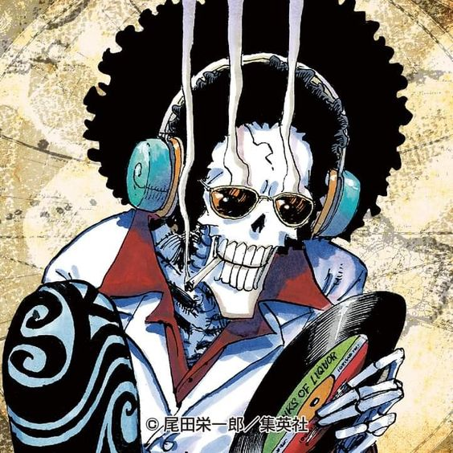
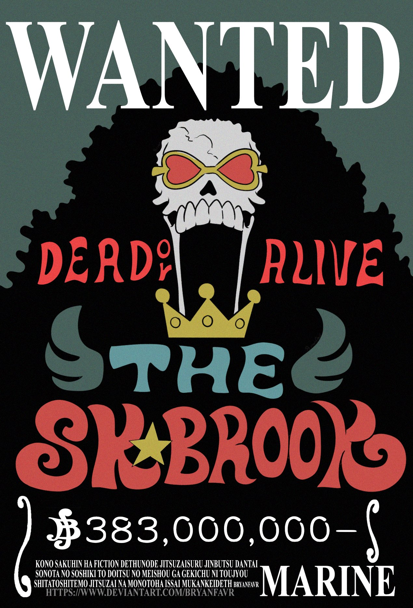
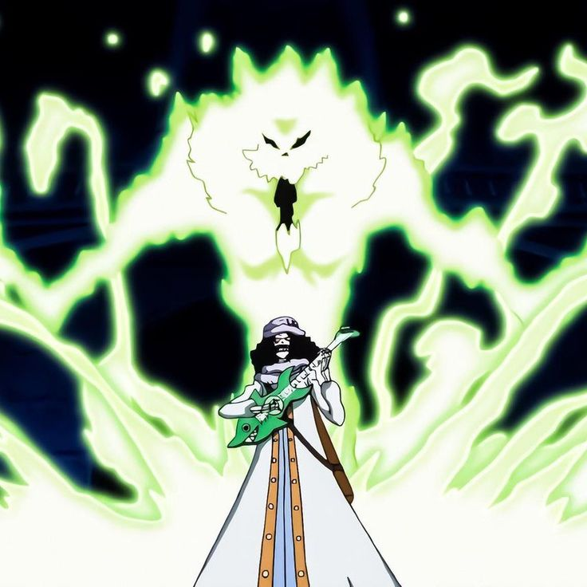
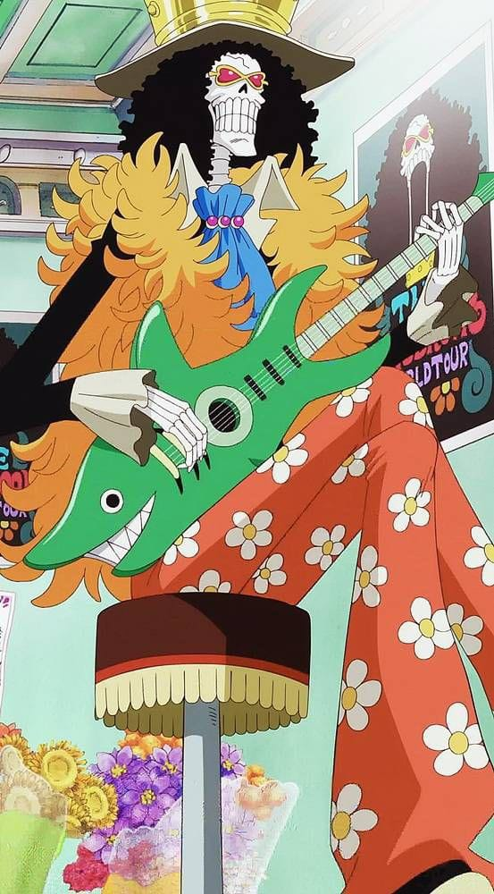

Brook

{kind=link}
También conocido como "Soul King" o "El Caballero de la Música", es un personaje importante en One Piece y un miembro querido de los Piratas del Sombrero de Paja. Es un esqueleto viviente y músico talentoso. Brook es reconocido por su apariencia única y distintiva. Es un esqueleto alto y delgado con una cabeza en forma de calavera y cabello largo y azul. Viste un elegante traje y siempre lleva consigo un violín o una guitarra. Además, Brook tiene una risa característica, "Yohohoho", que se ha vuelto icónica en la serie.

{kind=link}
Brook es un antiguo pirata y fue el capitán de los Piratas Rumbar. Después de morir y tener su alma unida a su esqueleto gracias a la Fruta del Diablo Yomi Yomi no Mi, obtiene una segunda oportunidad en la vida. Después de unirse a los Piratas del Sombrero de Paja, se convierte en su músico y se encarga de tocar música y alegrar el ambiente. Brook es un talentoso músico y su música tiene el poder de levantar el ánimo y transmitir emociones a quienes la escuchan. Además, Brook es un espadachín experto y utiliza una espada llamada "Soul Solid" en su lucha contra los enemigos. También puede usar su habilidad de separar su espíritu de su cuerpo, lo que le permite interactuar con el mundo de los espíritus y llevar a cabo ataques espectrales.

{kind=link}
Aunque Brook es alegre y divertido, también tiene momentos de melancolía debido a su pasado y la pérdida de su tripulación. Sin embargo, sigue adelante con una actitud positiva y es un gran apoyo para los demás miembros de la tripulación. Además de su amor por la música, Brook tiene un gran aprecio por la vida y una profunda comprensión de la importancia de los lazos emocionales. Siempre está dispuesto a ayudar a sus amigos y tiene un sentido de camaradería fuerte. Brook es un músico esqueleto y miembro querido de los Piratas del Sombrero de Paja. Su música y su espíritu alegre alegran la tripulación, y su habilidad con la espada y su experiencia en el combate lo convierten en un luchador valiente. Con su personalidad única y su historia conmovedora, Brook se ha convertido en un personaje querido y memorable en One Piece.

{kind=link}